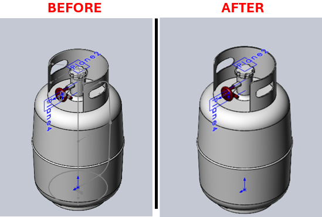

Hide All Sketches Macro for SolidWorks
Description
This macro hides all visible sketches in the active assembly. This is useful for cleaning up the view in complex assemblies where multiple sketches may clutter the workspace.
System Requirements
- SolidWorks Version: SolidWorks 2014 or newer
- Operating System: Windows 7 or later
Pre-Conditions
Note
- An assembly document must be open in SolidWorks.
- At least one part within the assembly should have a sketch that is set to show.
Results
Note
- All visible sketches in the assembly will be hidden.
Steps to Setup the Macro
1. Open the Assembly:
- Ensure that the assembly document you wish to clean up is open in SolidWorks.
2. Load and Execute the Macro:
- Load the macro into SolidWorks using the VBA editor (
Alt + F11). - Execute the macro from within SolidWorks by navigating to Tools > Macro > Run.
VBA Macro Code
' Disclaimer:
' The code provided should be used at your own risk.
' Blue Byte Systems Inc. assumes no responsibility for any issues or damages that may arise from using or modifying this code.
' For more information, visit [Blue Byte Systems Inc.](https://bluebyte.biz).
' *********************************************************
' Hide All Sketches.swp
' Description: Macro to hide all sketches in the active assembly.
' *********************************************************
Option Explicit
' Subroutine to hide a sketch feature
Sub BlankSketchFeature(swApp As SldWorks.SldWorks, swModel As SldWorks.ModelDoc2, swFeat As SldWorks.Feature)
Dim bRet As Boolean
' Check if the feature is a sketch
If "ProfileFeature" = swFeat.GetTypeName Then
' Select the sketch and hide it
bRet = swFeat.Select2(False, 0): Debug.Assert bRet
swModel.BlankSketch
End If
End Sub
' Subroutine to traverse features and their subfeatures
Sub TraverseFeatureFeatures(swApp As SldWorks.SldWorks, swModel As SldWorks.ModelDoc2, swFeat As SldWorks.Feature, nLevel As Long)
Dim swSubFeat As SldWorks.Feature
Dim swSubSubFeat As SldWorks.Feature
Dim swSubSubSubFeat As SldWorks.Feature
Dim sPadStr As String
Dim i As Long
Dim bRet As Boolean
' Create padding for debug output based on the level of recursion
For i = 0 To nLevel
sPadStr = sPadStr + " "
Next i
' Traverse through all features
While Not swFeat Is Nothing
Debug.Print sPadStr + swFeat.Name + " [" + swFeat.GetTypeName + "]"
BlankSketchFeature swApp, swModel, swFeat
' Traverse subfeatures
Set swSubFeat = swFeat.GetFirstSubFeature
While Not swSubFeat Is Nothing
Debug.Print sPadStr + " " + swSubFeat.Name + " [" + swSubFeat.GetTypeName + "]"
BlankSketchFeature swApp, swModel, swSubFeat
' Traverse sub-subfeatures
Set swSubSubFeat = swSubFeat.GetFirstSubFeature
While Not swSubSubFeat Is Nothing
Debug.Print sPadStr + " " + swSubSubFeat.Name + " [" + swSubSubFeat.GetTypeName + "]"
BlankSketchFeature swApp, swModel, swSubSubFeat
' Traverse sub-sub-subfeatures
Set swSubSubSubFeat = swSubSubFeat.GetFirstSubFeature
While Not swSubSubSubFeat Is Nothing
Debug.Print sPadStr + " " + swSubSubSubFeat.Name + " [" + swSubSubSubFeat.GetTypeName + "]"
BlankSketchFeature swApp, swModel, swSubSubSubFeat
Set swSubSubSubFeat = swSubSubSubFeat.GetNextSubFeature
Wend
Set swSubSubFeat = swSubSubFeat.GetNextSubFeature
Wend
Set swSubFeat = swSubFeat.GetNextSubFeature
Wend
Set swFeat = swFeat.GetNextFeature
Wend
End Sub
' Subroutine to traverse features of a component
Sub TraverseComponentFeatures(swApp As SldWorks.SldWorks, swModel As SldWorks.ModelDoc2, swComp As SldWorks.Component2, nLevel As Long)
Dim swFeat As SldWorks.Feature
Set swFeat = swComp.FirstFeature
TraverseFeatureFeatures swApp, swModel, swFeat, nLevel
End Sub
' Subroutine to traverse components and their features
Sub TraverseComponent(swApp As SldWorks.SldWorks, swModel As SldWorks.ModelDoc2, swComp As SldWorks.Component2, nLevel As Long)
Dim vChildComp As Variant
Dim swChildComp As SldWorks.Component2
Dim sPadStr As String
Dim i As Long
' Create padding for debug output based on the level of recursion
For i = 0 To nLevel - 1
sPadStr = sPadStr + " "
Next i
' Get child components and traverse them
vChildComp = swComp.GetChildren
For i = 0 To UBound(vChildComp)
Set swChildComp = vChildComp(i)
Debug.Print sPadStr & "+" & swChildComp.Name2 & " <" & swChildComp.ReferencedConfiguration & ">"
TraverseComponentFeatures swApp, swModel, swChildComp, nLevel
TraverseComponent swApp, swModel, swChildComp, nLevel + 1
Next i
End Sub
' Subroutine to traverse features in the main model
Sub TraverseModelFeatures(swApp As SldWorks.SldWorks, swModel As SldWorks.ModelDoc2, nLevel As Long)
Dim swFeat As SldWorks.Feature
Set swFeat = swModel.FirstFeature
TraverseFeatureFeatures swApp, swModel, swFeat, nLevel
End Sub
' Main subroutine to execute the macro
Sub main()
Dim swApp As SldWorks.SldWorks
Dim swModel As SldWorks.ModelDoc2
Dim swConf As SldWorks.Configuration
Dim swRootComp As SldWorks.Component2
Dim nStart As Single
' Initialize SolidWorks application and active document
Set swApp = Application.SldWorks
Set swModel = swApp.ActiveDoc
If swModel Is Nothing Then
MsgBox "No active document found. Please open an assembly.", vbExclamation, "Error"
Exit Sub
End If
Set swConf = swModel.GetActiveConfiguration
Set swRootComp = swConf.GetRootComponent
' Start timing the process
nStart = Timer
Debug.Print "File = " & swModel.GetPathName
' Traverse and hide all sketches in the model
TraverseModelFeatures swApp, swModel, 1
TraverseComponent swApp, swModel, swRootComp, 1
' Output elapsed time
Debug.Print "Time = " & Timer - nStart & " s"
End Sub
Macro
You can download the macro from here
Customization
Need to modify the macro to meet specific requirements or integrate it with other processes? We provide custom macro development tailored to your needs. Contact us.